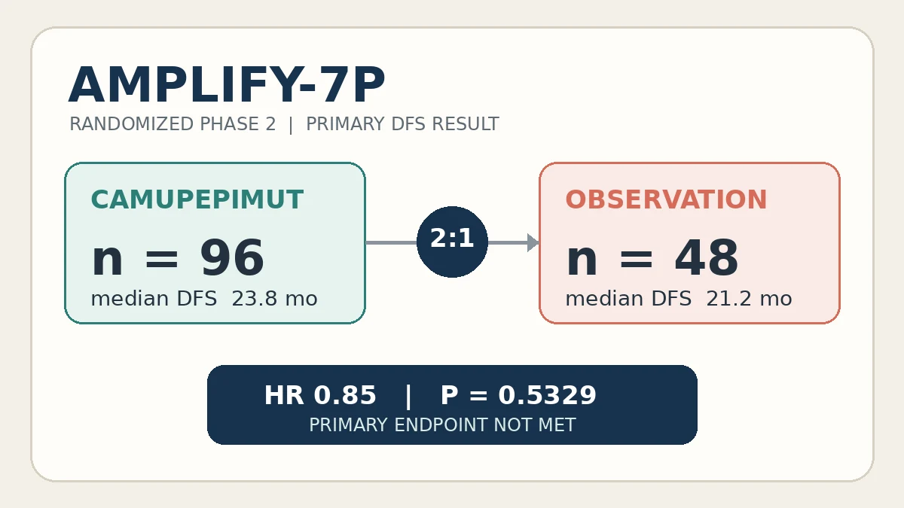

Çalışma, aşının değerlendirilebilen alıcıların neredeyse tamamında mutant KRAS’a karşı T hücresi yanıtı oluşturabildiğini gösterdi; fakat “bağışıklık yanıtı oluşturmak” ile “nüksü kesin olarak azaltmak” aynı değildir. Birincil sonlanım negatif olduğu için düzeltilmiş ve alt grup analizleri faz 3 doğrulamasının yerini alamaz. Camupepimut henüz kanıtlanmış tedavi ya da standart bakımın alternatifi değildir.

Bir dakikalık özet
Ben George, Harshabad Singh, Craig Devoe, Vincent Chung ve arkadaşları, AMPLIFY-7P faz 2 sonuçlarını 23 Ekim 2026’da Nature Medicine’da yayımladı. Çalışma; yedi yaygın mutant KRAS türünü hedefleyen deneysel peptit aşısı camupepimutu (ELI-002 7P), pankreas duktal adenokarsinomu ameliyatı ve standart tedavisi sonrasında sınadı. Görüntülemede nüksü olmayan 144 hasta, 2:1 oranında aşıya veya standart bakım/gözleme randomize edildi. [1] [2]
Dürüst özet iki parçalıdır: Aşı, değerlendirilebilen 90 alıcının 89’unda mKRAS’a özgü T hücresi yanıtı oluşturdu; ancak çalışmanın birincil hedefi olan tüm niyetlenen tedavi grubunda hastalıksız sağkalım üstünlüğü gösterilemedi. Medyan süre aşıyla 23,8, gözlemle 21,2 aydı; tehlike oranı 0,85 ve P=0,5329’du. Bu nedenle çalışma ilgi çekici bir biyolojik sinyal sunuyor, fakat nüksü önlediğini kesinleştirmiyor. [1]
Çalışma nasıl yapıldı?
Çalışma ABD’de 24 merkezde, açık etiketli ve randomize olarak yürütüldü. Katılımcılar, aşıdaki yedi hedeften birini taşıyan evre I–III KRAS mutasyonlu pankreas kanserine sahip yetişkinlerdi. Cerrahi ile standart kemoterapiyi, radyoterapi olsun ya da olmasın tamamlamış ve bölgesel tedaviden sonraki altı ay içinde görüntülemede hastalık göstermemişlerdi. Doksan altı kişi camupepimut, 48 kişi gözlem aldı; randomizasyon lenf nodu durumuna göre tabakalandırıldı. [1] [2]
Aşı şeması sekiz haftada altı deri altı doz, iki aylık dozsuz dönem ve ardından dört haftalık rapel dozdan oluştu. Ürün, yedi mutant KRAS peptidini lenf düğümünü hedefleyen bir adjuvanla birleştiriyor. Amaç, görünür metastatik tümörü tedavi etmek değil, standart tedavi sonrasında kalabilecek mikroskobik hastalığı hedeflemekti. Körleme yoktu; yine de nüks veya ölüme kadar geçen süre, öznel sonuçlara göre bu eksiklikten daha az etkilenir. [1]
Birincil sonuç neydi?
Önceden belirlenmiş tüm izlem analizinde nüks veya ölüm tehlike oranı 0,85’ti. Medyanlar arasındaki fark yalnızca 2,6 aydı ve istatistiksel olarak anlamlı değildi. Aşılama dönemine denk gelen ilk altı ayda aşı grubunun yüzde 75,7’si, gözlem grubunun yüzde 61,7’si hastalıksızdı; mutlak fark 14 puan ve HR=0,55’ti, ancak P=0,0557 olağan 0,05 eşiğini geçmedi. Bu erken sinyal, negatif birincil sonucu tersine çeviremez. [1]
Başlangıçta daha kötü prognozla ilişkili olan pozitif dolaşımdaki tümör DNA’sı (ctDNA), aşı kolunda daha sıktı. Çalışma sonrası çok değişkenli düzeltme HR=0,47 buldu; önceden tanımlı ctDNA-negatif ve daha önce radyoterapi almamış alt gruplarda da HR sırasıyla 0,51 ve 0,59’du. Ancak sonradan yapılan ayarlamalar ve çoklu karşılaştırmalar sonucu kırılganlaştırabilir. Bu veriler faz 3 tasarımına yol gösterebilir, fakat ana randomize popülasyonda başarıyla eşdeğer değildir. [1]
Bağışıklık yanıtı ve güvenlilik
Aşı kolunda değerlendirilebilen 90 hastanın yüzde 98,9’unda mutant KRAS’a özgü T hücresi yanıtı gelişti. Aynı kol içinde başlangıcın 9,17 katını aşan yanıt, daha iyi hastalıksız sağkalımla ilişkiliydi (HR=0,22). Biyolojik açıdan önemli olan bu ilişki nedenselliği kanıtlamaz: Hastalar “güçlü” veya “zayıf” yanıta randomize edilmedi. Bağışıklık sağlığı, hastalık yükü ya da ölçülmeyen etkenler hem yanıtı hem sonucu etkileyebilir. [1]
Üçüncü derece veya daha ağır olaylar aşı grubunda yüzde 10,4, gözlem grubunda yüzde 14,6; ciddi olaylar sırasıyla yüzde 6,3 ve yüzde 8,3 oranında bildirildi. Bazı olaylar kanser ilerlemesi ya da cerrahi komplikasyonla ilişkiliydi. Örneklem nadir veya geç toksisiteleri saptamak için yeterli değildir; sayısal benzerlik de güvenliliğin eşdeğer olduğunu kanıtlamaz. [1]
Sınırlılıklar ve çıkar çatışmaları
En önemli sınırlılık, birincil sonlanımın negatif olmasıdır. Çalışma küçük, açık etiketli ve faz 2 düzeyindeydi; tabakalama yalnız lenf nodu durumuna göre yapıldı ve ctDNA dengesizliği kaldı. Alt grup analizleri, T hücresi yanıt eşiği ve düzeltilmiş model hipotez üretmek için yararlı olsa da tesadüfi bulgu ve ölçülmemiş karıştırıcı riskine açıktır. Genel sağkalım kesin yorum için olgun değildi; ECOG performansı 0–1 olan seçilmiş katılımcılar tüm pankreas kanseri hastalarını temsil etmez. [1]
Çalışmayı Elicio Therapeutics tasarladı ve finanse etti. Birçok yazar şirket çalışanı, hissedarı veya aşı patentleriyle bağlantılıydı; klinik araştırmacılar başka mali ilişkiler de bildirdi. Bağımsız veri izleme komitesi bulunması ve hakem değerlendirmesi önemli güvencelerdir, ancak destekleyicinin rolü ve çıkar çatışmaları keşifsel sinyaller yorumlanırken görünür tutulmalıdır. [1]
Tedavi önerisi vermeden pratik anlam
Çalışmanın iki gerçek katkısı var: Hazır, kişiye özel olmayan bir aşı farklı HLA yapılarında mutant KRAS’a karşı yaygın T hücresi yanıtı oluşturabildi; ayrıca immünojenisite göstergesinin klinik sonlanımın yerine geçmediğini açıkça gösterdi. ctDNA’ya göre uygun tabakalama yapılmış bir faz 3 çalışması hastalıksız sağkalım ve güvenlilik yararını doğrulamadıkça camupepimut kanıtlanmış tedavi, kemoterapinin alternatifi veya bireysel bakımı değiştirme gerekçesi olarak sunulmamalıdır. Ameliyat sonrası kararlar onkoloji ekibiyle ve geçerli standartlara göre verilmelidir.
Birincil kaynaklar
Hakemli makalenin tam metni, erişilebilir ek materyali, yayıncı sayfası ve çalışma kaydı incelendi. Makale 23 Ekim 2026’da yayımlandı ve CC BY-NC-ND 4.0 lisansıyla erişilebilir. İnceleme sırasında makale sayfasında ve başlık/DOI taramasında düzeltme veya geri çekme kaydı görülmedi. Sayılar yayımlanmış analizden alınmıştır; eşlik eden görsel bağımsız tasarımdır ve makalenin resmi şekli değildir.
Bu yazı genel bilgilendirme amaçlıdır; kişiye özel tanı veya tedavinin yerini tutmaz.